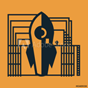

This extension is inserting an Adobe Launch container onto any pages matching the URL pattern as defined in the manifest.json file
- - -
TIP: Within Adobe Launch create a Rule for page-loads and a Rule for 'all clicks' that only fire for the domain you wish to demo on. That way you can use the same container and Extension setup for all demos without having to re-build a configuration set each time.
- - -
Built by Steven Biss, Adobe (biss@adobe.com).